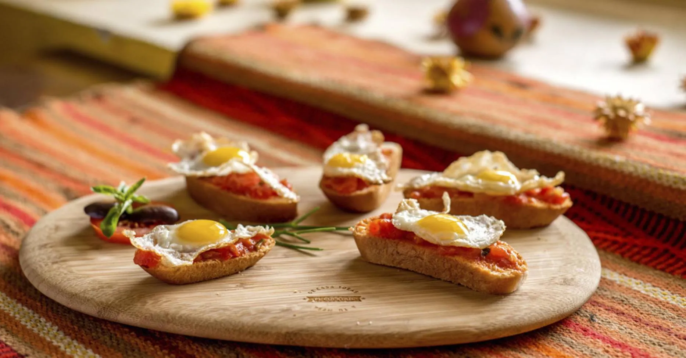

Laboratorio
Café Fusiones cuenta con un laboratorio de café especiales (Lab Café Especiales / Fusiones Lab) que te permite vivir la experiencia de procesar café desde la etapa de tostado hasta la degustación del mismo, conjugando técnica, arte y experiencia.
Tostado y molienda
La experiencia inicia con el tostado, proceso en el cual, los granos previamente seleccionados, son expuestos a calor, en tiempo, temperatura y condiciones adecuadas para garantizar un armonioso tueste sentando las bases para llevar un producto de calidad adecuado a tu paladar y taza.
Luego del tostado sigue la etapa de molienda en donde el grano es cuidadosamente reducido a un tamaño homogéneo, adecuado al tipo de cafetera que se necesita para extraer el rico café. Un molinillo manual es utilizado para efectuar esta crítica etapa que define mucho de los resultados a obtener durante las siguientes etapas de extracción.
La molienda debe ser cuidadosamente realizada porque el molido debe ser adecuado al tipo de cafetera. En otras palabras, los granos molidos para una cafetera expreso son muy diferente al molido para una cafetera de filtro. Esto hace de este proceso una mezcla entre ciencia y arte.
El café es muy versátil y eso hace que podamos obtener distintos resultados con el mismo café pero con diferentes métodos de preparación. ¿Por qué? En síntesis, la molienda del café, el tiempo de contacto con el agua, la temperatura del agua y el proceso en sí, hacen que el producto obtenido pueda ser más dulces, con más cafeína, u otras características.


La Experiencia
En Lab Café Especiales (Fusiones Lab) también vivirás la experiencia de observar y practicar mediante diferentes métodos de extracción tales como filtrado por goteo, métodos de infusión presurizada, métodos de infusión, método de filtrado al vacío y método del percolado.
Finalmente, la experiencia se consolida con la degustación del delicioso café que fue elaborado combinando nuestra mística, aroma y sabor de siempre.
Hacer Reservación